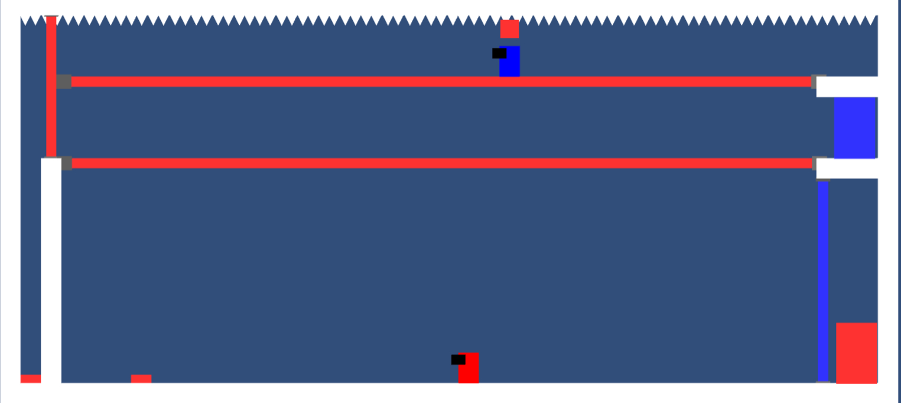

Twin Orbit
Reunite a pair of twins in this 2D pixel art puzzle game!
1
1 Year
Solo Developer
Programs Used:
- -Unity
- -GIMP
- -Trello
- -Audacity
When the Lunar colony's main computer broke down, a pair of twins were stranded on the moon. With their movements in sync, the twins must navigate the ruined colony to repair key modules to make it habitable again. Pay attention to each twin's movements and position to solve puzzles and progress through the colony. Oh, but watch out for the scurity lasers!
Twin Orbit was a solo project I made during my Senior year of high school as a way to introduce myself to game development. I taught myself all the skills I needed from scratch, including learning Unity and C#, pixel art, level design, and task management.
My Contributions:
- Designed 25 unique puzzles.
- Animated in-game cutscenes using the Unity Timeline.
- Created 2D pixel-art characters and environments.
- Programmed main mechanics.
- Researched and debugged errors.


An early prototype version of the game.
